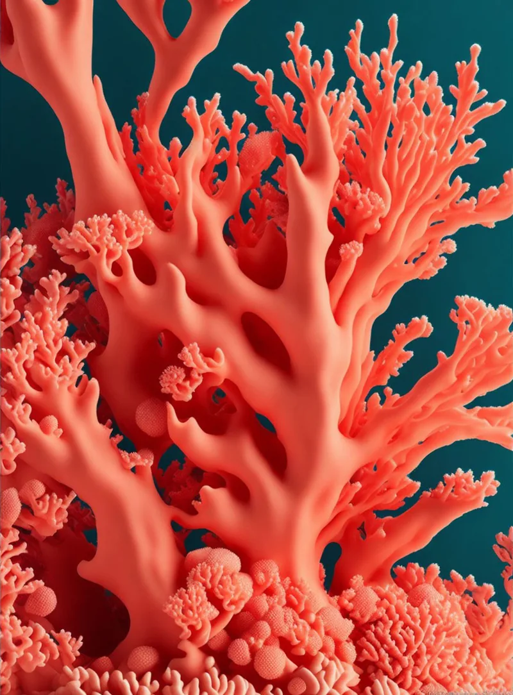
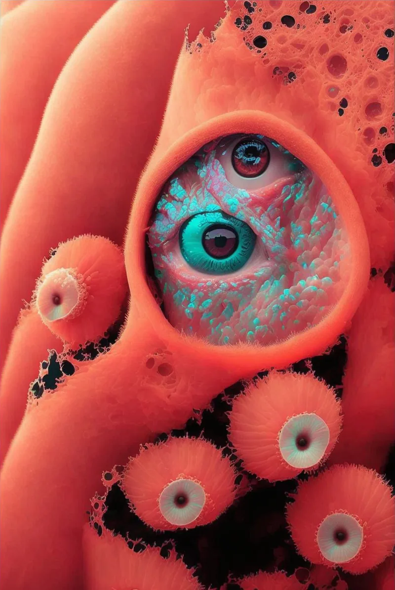
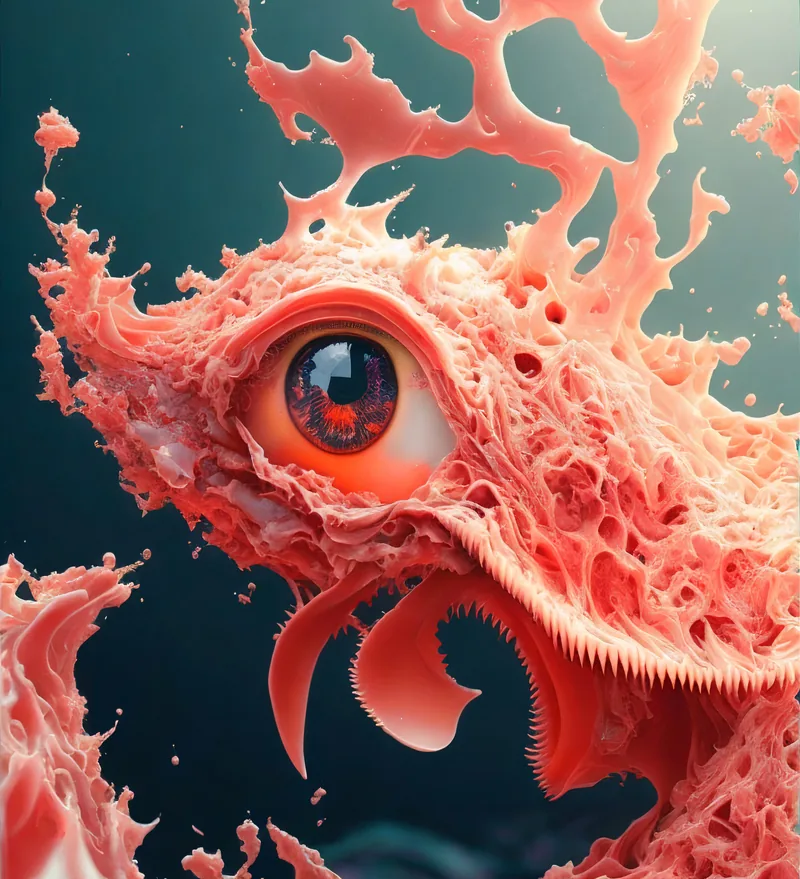

And every time she dove, she was amazed at the beauty and diversity of life that lived beneath the surface.
From vibrant fish that danced and twirled in the currents, to the delicate sea fans and anemones that swayed gently in the gentle swell.

However, as she continued to dive and explore, she realized that there was so much more to the underwater world than just what met the eye. She learned that by looking close, she could see the intricate and delicate relationships that existed between the different forms of sea life.
As if they were all connected by an invisible energy force.

It was much like the inner world of human emotions and energy. Just like the coral reef, our inner world is full of vibrant and diverse emotions and energies, each connected and intertwined in their own delicate balance.
Some days, like the tiny crabs, our emotions and energy can seem small and insignificant, but they can attract the attention of our thoughts and fears, much like the predatory fish.
